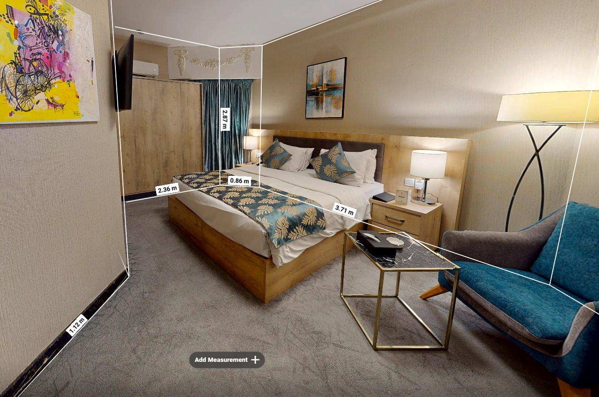
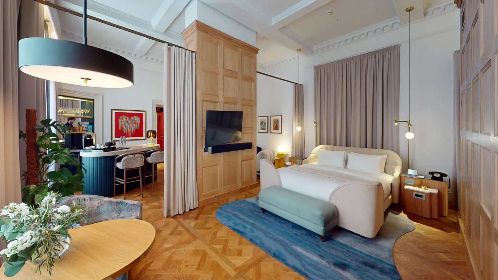
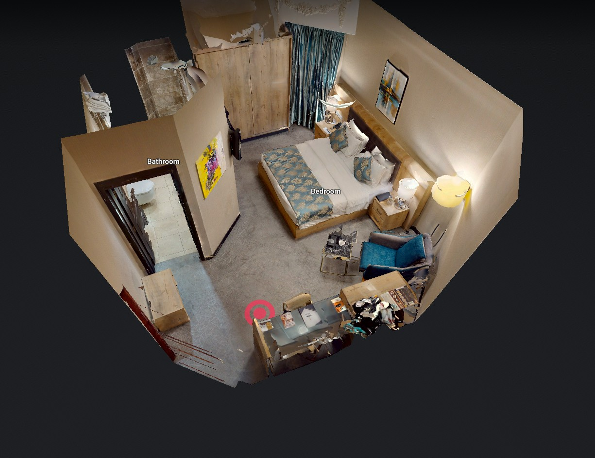

عرض احترافي للمشروع
تقديم العقار ومعلوماته ضمن تجربة رقمية واضحة ومنظمة.

أبعاد العراق | حلول رقمية للقطاع العقاري
حلول متكاملة تجمع الجولات الافتراضية، المواقع الإلكترونية والمحتوى البصري لتقديم العقارات بصورة واضحة وتفاعلية، ودعم عمليات التسويق، البيع والتوثيق.
01
الحضور الرقمي للعقار
المشاريع العقارية تحتاج إلى منظومة رقمية تعكس مستوى المشروع وتجمع المعلومات، الصور، تفاصيل الوحدات والجولات الافتراضية ضمن تجربة واحدة سهلة الوصول والمشاركة.
تقديم العقار ومعلوماته ضمن تجربة رقمية واضحة ومنظمة.
جمع الصور، المساحات، التفاصيل والجولات ضمن مصدر واحد.
مشاركة المشروع عبر رابط، QR Code أو الحملات الرقمية.
تحويل التصوير إلى مواد يمكن استخدامها في التسويق والعروض والمبيعات.
02
الحلول الرقمية للقطاع العقاري
إلى جانب الجولات الافتراضية، تطور أبعاد العراق حلولاً رقمية مخصصة للشركات والمشاريع العقارية، بهدف تنظيم المعلومات، تسهيل عمليات البيع، وتحسين طريقة تفاعل العميل مع المشروع.
يمكن تطوير الحل من الصفر بحسب احتياجات المشروع وآلية العمل داخل الشركة أو مركز المبيعات.
مواقع مخصصة للشركات والمجمعات والمشاريع العقارية لعرض المشاريع، الوحدات، المعلومات والمحتوى الرقمي ضمن تجربة متكاملة.
تطبيقات مخصصة لاستعراض المشاريع والوحدات، البحث والفلترة، حفظ الخيارات وربط العميل بفريق المبيعات.
أنظمة تساعد فرق المبيعات على عرض الوحدات، تفاصيلها، حالتها، مخططاتها والجولات الافتراضية من واجهة واحدة.
تطوير حلول رقمية حسب احتياج المشروع، مثل إدارة الوحدات، متابعة العملاء، الحجوزات، العروض أو أي Workflow يحتاج إلى نظام خاص.
Website · Apps · Sales Systems · Custom Solutions
حل واحد لا يناسب كل مشروع، لذلك تُبنى المنظومة حسب طريقة العمل الفعلية.03
الجولات الافتراضية
تتيح الجولة الافتراضية تصوير العقار وتحويله إلى مساحة رقمية تفاعلية يمكن التجول داخلها عن بُعد، مع الحفاظ على العلاقة الحقيقية بين الغرف، المساحات والتفاصيل الداخلية.
ولا تقتصر فائدتها على التسويق؛ بل يمكن استخدامها كأداة توثيق للمشروع والتصميم الداخلي، ومرجع للمهندسين، فرق التطوير وأصحاب المشروع.
مشاهدة العقار بأكثر من منظور لفهم التوزيع والعلاقة بين المساحات.
إمكانية أخذ قياسات ومسافات من داخل الجولة والرجوع إليها عند الحاجة.
إضافة معلومات، صور، روابط أو تفاصيل توضيحية داخل نقاط محددة من الجولة.
الاحتفاظ بنسخة رقمية دقيقة للمساحات والتصاميم الداخلية يمكن الرجوع إليها لاحقاً.
04
من جولة واحدة
عملية التصوير الواحدة لا تنتج جولة افتراضية فقط، بل توفر مجموعة من المواد الرقمية التي يمكن استخدامها في التسويق، العرض والتوثيق.





نماذج فعلية لتجربة الاستكشاف والتنقل داخل المشاريع.
نموذج الجولة 01
نموذج الجولة 02
نموذج الجولة 03
05
أين يمكن استخدام الجولة؟
يمكن استخدام الجولات الافتراضية داخل عملية البيع والتسويق بأكثر من طريقة، سواء داخل مركز المبيعات أو عند التواصل مع العميل عن بُعد.

تشغيل الجولة على شاشة كبيرة أو شاشة لمس أثناء شرح المشروع والوحدات.
إرسال الجولة للعميل ليتمكن من استكشاف العقار من الهاتف أو الحاسوب.
إضافته إلى المطبوعات، اللوحات، المعارض أو الحملات الإعلانية.
عرض العقار باستخدام نظارات الواقع الافتراضي لتقديم تجربة أكثر غمراً.
06
استخدامات الجولات الافتراضية
عرض العقارات بصورة تفاعلية ومشاركتها مباشرة مع العملاء والحملات.
استخدام الجولة أثناء الاجتماعات أو داخل مركز المبيعات لشرح العقار والوحدات.
إنشاء توثيق رقمي للمشاريع والوحدات يمكن الرجوع إليه ومشاركته بسهولة.
توثيق التصميم الداخلي والمساحات والرجوع إلى القياسات والتفاصيل عند الحاجة.
استكشاف العقار عن بُعد قبل تحديد موعد الزيارة الفعلية.
الاحتفاظ بمرجع بصري للمساحات والتفاصيل في مرحلة محددة من المشروع.
07
أبعاد العراق
تعمل أبعاد العراق على تنفيذ الجولات الافتراضية الاحترافية في العراق، وتطوير الحلول الرقمية المرتبطة بها للقطاع العقاري.
أبعاد العراق هي أول جهة عراقية متخصصة في تنفيذ الجولات الافتراضية الاحترافية للمشاريع والمنشآت.
تنفيذ التصوير داخل الموقع وتجميع البيانات البصرية للمكان.
إعداد التجربة التفاعلية، النقاط الذكية والمعلومات المطلوبة.
استخراج الصور، الفيديوهات والمواد المناسبة للتسويق.
دمج الجولة في الموقع الإلكتروني وتجهيزها للرابط، QR، الشاشة أو VR.
08
خدمات أبعاد العراق
تنفذ أبعاد العراق مجموعة من الحلول التي يمكن دمجها ضمن مشروع واحد أو تطوير كل خدمة بشكل مستقل، بحسب طبيعة المشروع وآلية التسويق والمبيعات.
تصوير وتوثيق العقارات وتحويلها إلى تجارب تفاعلية قابلة للاستكشاف والمشاركة.
تصميم وتطوير مواقع للشركات والمجمعات والمشاريع العقارية لعرض الوحدات والمعلومات والمحتوى.
تطوير تطبيقات مخصصة لعرض المشاريع والوحدات والبحث والفلترة والتواصل مع فرق المبيعات.
تطوير أنظمة تجمع الوحدات، حالتها، التفاصيل، المخططات والمحتوى الرقمي ضمن واجهة واحدة لفرق المبيعات.
تطوير أنظمة حسب Workflow المشروع، مثل إدارة الوحدات، الحجوزات، العملاء، العروض أو أي عملية تحتاج إلى حل رقمي خاص.
إنتاج وتجهيز الصور عالية الدقة، الفيديوهات، QR Codes، الشاشات التفاعلية ووسائل عرض ومشاركة المشروع.
من عرض العقار إلى بناء المنظومة الرقمية المحيطة به.
يمكن اختيار خدمة واحدة أو دمج عدة خدمات ضمن حل متكامل للمشروع.يتم احتساب تكلفة تنفيذ الجولة الافتراضية بحسب مساحة الموقع، مع تحديد خدمات الإضافة والاستضافة وفق متطلبات المشروع.
من 50 إلى 500 م²
من 601 إلى 1100 م²
من 1101 إلى 3000 م²
أكثر من 3000 م²
5 دولارات للنقطة الواحدة، وتشمل إضافة نصوص أو صور أو ميديا ومحتوى تفاعلي داخل الجولة.
تبدأ تكلفة استضافة الرابط الواحد من 100 إلى 350 دولاراً بحسب مساحة المشروع ومتطلبات الجولة.
تتوفر الاستضافة بدفعات سنوية أو نصف سنوية، وتشمل الاستضافة والدعم الفني والتحديثات المتفق عليها.
يتم تحديد العدد النهائي للنقاط الذكية ورسوم الاستضافة بعد الاتفاق على تفاصيل المشروع ونطاق التنفيذ.
يمكن إعداد الحل بحسب نوع المشروع، عدد العقارات وطريقة استخدام الجولات داخل التسويق أو المبيعات أو التوثيق.
تواصل مع أبعاد العراق